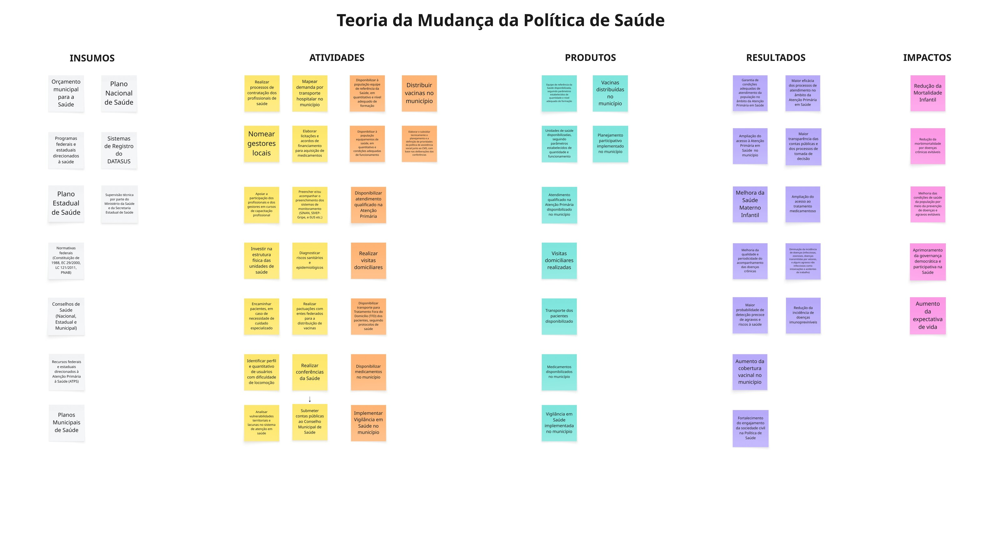

Como o município, articulado ao SUS, transforma orçamento, normativas federais e sistemas de informação em redução da mortalidade infantil, ampliação da expectativa de vida e melhoria das condições gerais de saúde da população.

A política municipal de saúde brasileira opera dentro de uma arquitetura federativa complexa: o município é o gestor da Atenção Primária — porta de entrada do SUS — e responde também por parte significativa da média complexidade, sempre articulado com normativas federais (Constituição/SUS, Política Nacional de Atenção Básica) e com o Plano Estadual de Saúde.
Esta teoria de mudança parte do princípio de que os impactos finais — redução da mortalidade infantil, da mortalidade por doenças crônicas evitáveis, ampliação da expectativa de vida e maior equidade no acesso — não acontecem pelo investimento isolado em um insumo ou pela existência de um único programa. Eles emergem da articulação coerente entre orçamento previsível, profissionais capacitados, infraestrutura adequada, sistemas de informação funcionando (DATASUS, SISAN, SIVEP-Gripe), vigilância epidemiológica ativa e canais de participação social.
O mapa não pretende ser exaustivo nem prescritivo: é uma hipótese explícita e revisável, sobre a qual cada município pode pousar sua realidade local, identificar gargalos e priorizar onde investir esforços de monitoramento e avaliação.
Para gestores: identifique em qual coluna seu município concentra esforços e onde a cadeia está mais frágil. Se há muitos insumos e poucos produtos chegando à população, o gargalo está nas atividades. Se há produtos mas não há resultado, revise a qualidade da entrega.
Para avaliadores: use o mapa para formular perguntas avaliativas no nível certo da cadeia. Avaliação de processo se debruça sobre atividades e produtos; avaliação de resultados, sobre a coluna de resultados; avaliação de impacto, sobre a última coluna.
Para órgãos de controle: a teoria permite analisar se o gasto público está produzindo a cadeia esperada de efeitos, e onde estão as desconexões.
{kind=link}